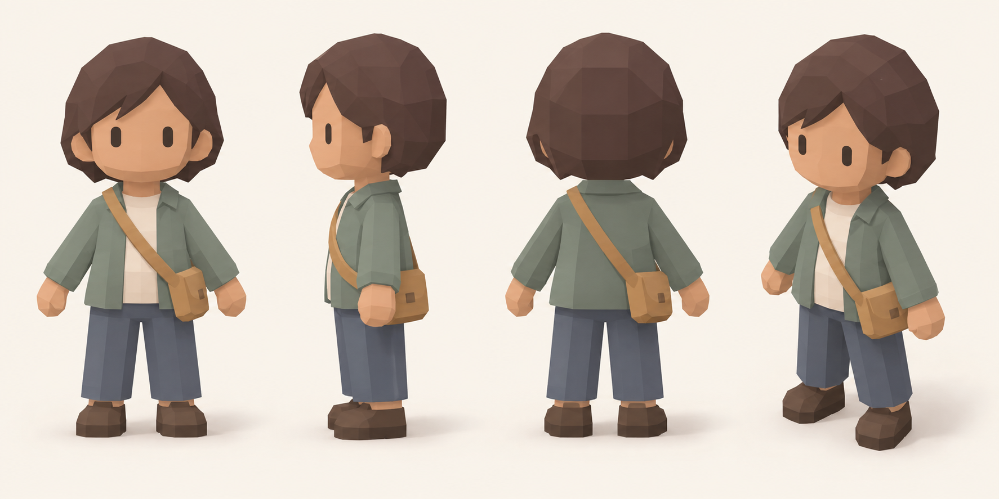
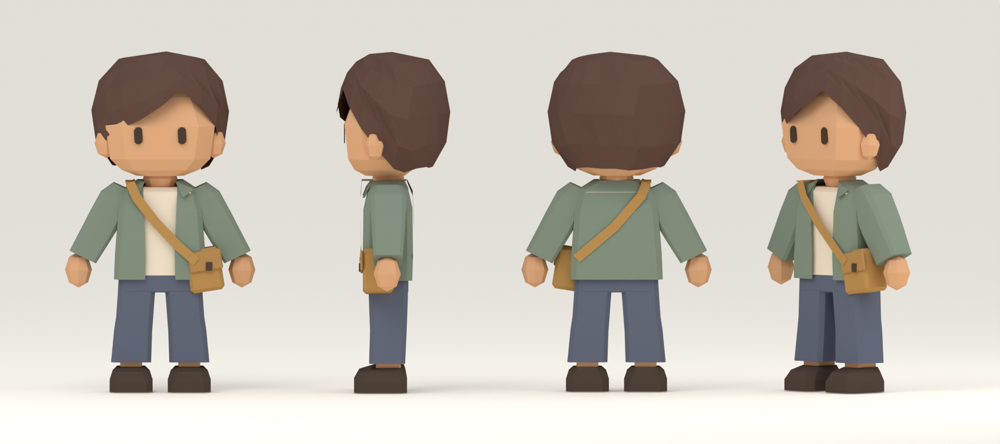

Komachi resident
Generated design reference and the revised Blender model. The model is a hand-built interpretation with a wider face, swept hair, continuous clothing and a simple animation rig.
Generated reference
Revised Blender model
Blender source · GLB export · Full-size render